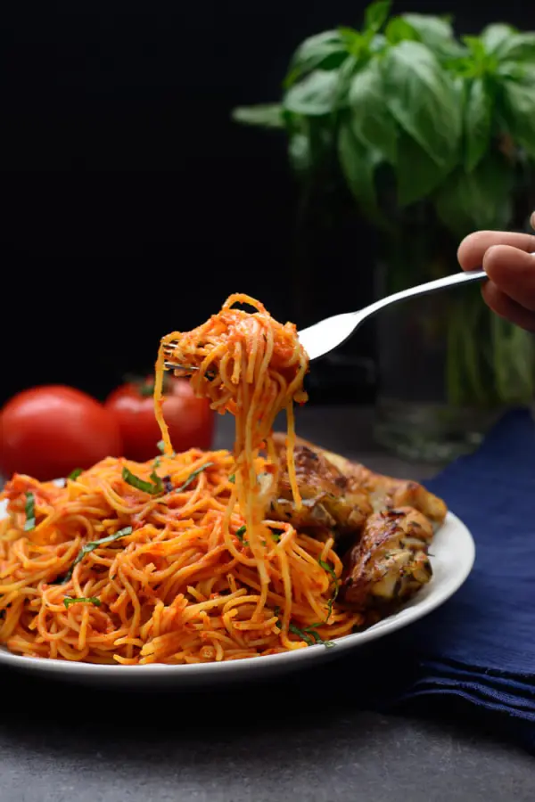
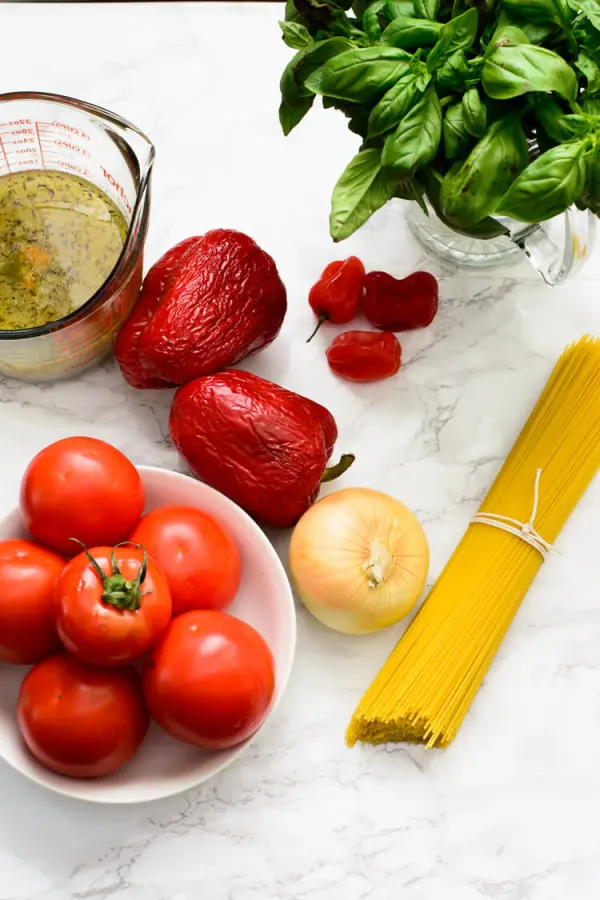
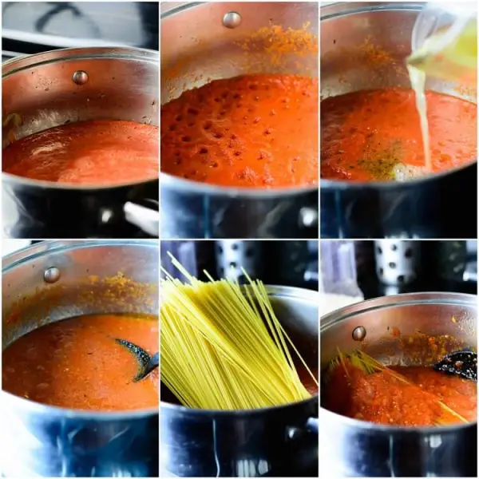

Recipe Information
Preparation time: 40 minutes
Cooking time: 40 minutes
Servings: 6 servings
Difficulty level: Beginner
Ingredients
- 1 lb (usually 1 box) thin spaghetti
- 2 3/4 cups chicken stock (homemade preferred)
- 5 large (about 2 lbs) plum/roma tomatoes
- 1 large onion
- 1 red bell pepper
- 2 scotch bonnet peppers
- 3 tbsp vegetable oil
- 2 tsp bouillon powder
- 1 tsp dried thyme
- 1 tsp curry powder
- A small handful of basil (optional)
- Salt to taste
Instructions
- Blend the tomatoes, onions, and peppers until smooth.
- Boil down the tomato sauce in a pot on medium-high heat until the sauce is about half the amount, and has thickened significantly to look like a paste. This takes about 15-20 minutes, depending on how high the heat is.
- Be sure to stir the sauce occasionally to prevent it from burning.
- Once the sauce is reduced, pour in the stock, oil, thyme, curry powder and bouillon. At this stage, taste the sauce and adjust for salt.
- Add in the spaghetti, pushing it down or breaking it to fit into the pot.
- Cover and allow to cook for 5 minutes on low-medium heat.
- After 5 minutes, the pasta should be soft enough to stir. Stir, turn down the heat to low, and allow to cook for another 8-10 minutes.
- After 8 minutes, stir, and the pasta should be cooked. If it is not, add in a splash (about 1/4 cup) of water and continue to cook for another 5 minutes.
- If you choose to add basil, add it in at this stage, and stir well.
- Once everything is well combined and the pasta is cooked to your liking, remove from heat.
- Serve hot, and enjoy your delicious Jollof Spaghetti!
Tips
When stirring the pasta, you may notice that the bottom of the pot may burn slightly, do not panic. This burn gives your dish a distinct party jollof taste. Count it as a bonus privilege.
Finished Dish

Ingredients

Cooking Process

Nutrition Facts
- Calories: 484kcal
- Protein: 12g
- Fat: 8g
- Carbohydrates: 55g